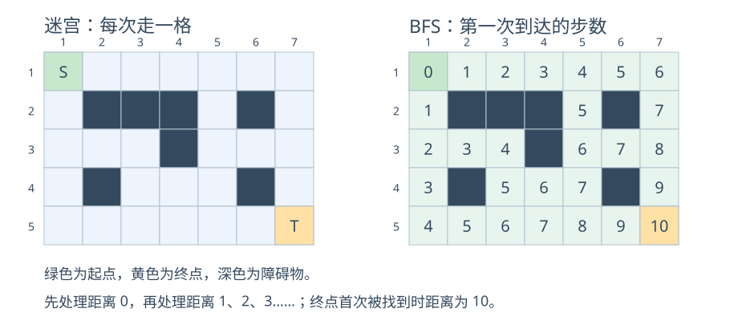
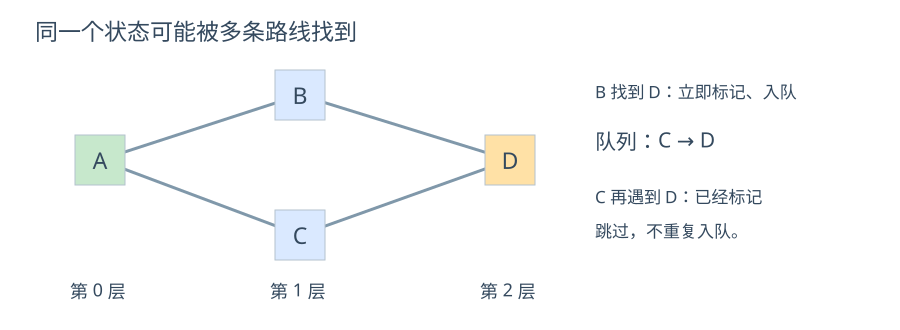
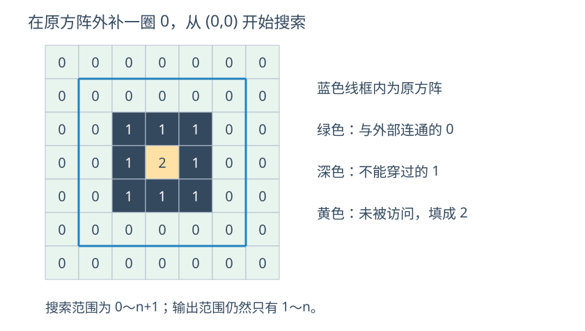

给出一个迷宫，从起点出发，每次可以向上、下、左、右移动一格，不能走出地图，也不能走进障碍物。
现在我们不只想知道能否到达终点，还想知道：最少需要走多少步？
一种朴素的思路是，递归枚举所有可能的路线，走到终点后更新最小步数。为了避免在同一条路线中绕圈，可以记录这条路线已经经过的位置，回溯时再恢复标记。
但是，不同路线可能反复经过同一个位置。即使不允许一条路线重复经过某个格子，可选路线仍然可能很多，最坏情况下搜索量会呈指数级增长。
接下来考虑，我们一定要把所有路线都试一遍吗？
如果先找出走
这就是本节要学习的 广度优先搜索。
广度优先搜索，英文为 Breadth-First Search，简称 BFS，也叫宽度优先搜索。
它从起点出发，按照步数从小到大的顺序，一层一层地扩展尚未访问过的状态。
当每次操作的代价相同时，可以利用 BFS 求解最少操作次数。下面先把每次移动的代价看作
。
下面是一个迷宫，S 表示起点，T 表示终点，深色格子表示障碍物。

我们维护数组
开始时，起点的距离为
从起点走一步，能够到达的尚未访问位置，距离为
从距离为
依次向外扩展，直到找到终点，或者所有能够到达的位置都已经处理完。
图中终点的距离为
注意：这里的“层”，指的是从起点出发需要走的步数，不是地图上的行号。
我们从第
假设一个位置第一次在第
因此，只要我们保证按层扩展，第一次找到一个位置时，记录的步数就是最少步数。
上面的结论依赖于：每次移动的代价相同。
如果有的路走一次需要
分钟，有的路需要 分钟，走的步数少，不代表花费的时间少。这种情况不能直接用本节的普通 BFS 求最短时间。
接下来考虑，如何让程序按照步数从小到大的顺序处理位置？
我们在常用
先发现的位置先放入队列，也先取出来处理。处理一个位置时，把新发现的位置放到队尾，等待后续处理。
1queue<int> q;2q.push(x);//把x放入队尾3int u=q.front();//取队头4q.pop();//弹出队头，注意pop()不返回元素对于地图上的位置，可以使用结构体存储坐标。
xxxxxxxxxx51struct node{2 int x,y;3};4queue<node> q;5q.push({1,1});假设起点为

队列的变化如下，左侧为队首：
| 当前操作 | 操作后的队列 | 新发现的状态 |
|---|---|---|
| 起点入队 | ||
| 取出 | ||
| 取出 | ||
| 取出 | 不重复加入 | |
| 取出 | 空 | 搜索结束 |
容易发现，虽然处理
同一个位置可能从不同方向走到。如果不判重，就会重复加入队列，甚至在两个位置之间来回走动。
我们可以让
xxxxxxxxxx41if(dis[nx][ny]==-1){2 dis[nx][ny]=dis[x][y]+1;3 q.push({nx,ny});4}这样
一定要在入队时就标记，而不是等到出队时再标记。
如图，
找到 时， 还没有出队。如果此时不标记，处理 时就会再次把 放入队列。
思路：
方向数组的使用方法与模拟法中相同。对于当前坐标
每次扩展时，依次检查：
是否在地图内。
是否为可以通行的格子。
是否尚未访问过。
全部满足，就记录距离并加入队列。
注意先判断边界，再访问数组
代码：
x1
3using namespace std;4
5using i64=long long;6
7const int N = 60;8char a[N][N];9int d[N][N],st[N][N];10int sx,sy,gx,gy;11int n,m;12const int dx[]={0,0,1,-1};13const int dy[]={1,-1,0,0};14
15bool check(int x,int y){16 return (0<=x&&x<n&&0<=y<m&&a[x][y]=='.'&&!st[x][y]);17};18
19struct node{20 int x,y;21};22void bfs(){23 queue<node> q;24 memset(d,0x3f,sizeof d);25 d[sx][sy]=0;26 q.push({sx,sy});27 while(!q.empty()){28 int x=q.front().x,y=q.front().y;29 q.pop();30 for(int i=0;i<4;i++){31 int xx=x+dx[i],yy=y+dy[i];32 if(check(xx,yy)){33 d[xx][yy]=min(d[xx][yy],d[x][y]+1);34 st[xx][yy]=1;35 q.push({xx,yy});36 }37 }38 }39}40void Showball(){41 cin>>n>>m;42 cin>>sx>>sy>>gx>>gy;43 sx--;sy--;gx--;gy--;44 for(int i=0;i<n;i++){45 for(int j=0;j<m;j++){46 cin>>a[i][j];47 }48 }49 bfs();50 cout<<d[gx][gy]<<"\n";51}52int main(){53 ios::sync_with_stdio(false);54 cin.tie(nullptr);55 int t=1;56 //cin>>t;57
58 while(t--){59 Showball();60 }61
62 return 0;63}64
上面的坐标可以换成楼层、数字、字符串等其他状态。整体流程并不改变：
xxxxxxxxxx81将所有状态标记为未访问2起点的距离设为0，并加入队列3只要队列不为空：4 取出队首状态u5 枚举u经过一次操作能够到达的状态v6 如果v合法且尚未访问：7 dis[v]=dis[u]+18 将v加入队列真正写题时，重点考虑三个问题：用什么表示状态、一次操作能够到达哪些状态、如何判断已经访问过。
给出一个
思路：
与迷宫最短路相比，状态仍然是坐标，区别仅在于一次移动的方式。
马走“日”字，一次可以尝试
xxxxxxxxxx21const int dx[]={1,1,-1,-1,2,2,-2,-2};2const int dy[]={2,-2,2,-2,1,-1,1,-1};代码：
xxxxxxxxxx631
3using namespace std;4
5using i64=long long;6
7int dx[]={1,1,-1,-1,2,2,-2,-2};8int dy[]={2,-2,2,-2,1,-1,1,-1};9
10int n,m;11int sx,sy;12int st[500][500];13int d[500][500];14bool check(int x,int y){15 return (0<=x&&x<n&&0<=y&&y<m&&!st[x][y]);16}17struct node{18 int x,y;19};20void bfs(){21 queue<node> q;22 q.push(node{sx,sy});23 //初始化成较大的数24 memset(d,0x3f,sizeof d);25 d[sx][sy]=0;26 while(!q.empty()){27 int x=q.front().x,y=q.front().y;28 q.pop();29 //枚举所有相邻结点30 for(int i=0;i<8;i++){31 int xx=x+dx[i],yy=y+dy[i];32 if(check(xx,yy)){33 st[xx][yy]=1;34 d[xx][yy]=min(d[xx][yy],d[x][y]+1);35 q.push(node{xx,yy});36 }37 }38 }39}40void Showball(){41 cin>>n>>m>>sx>>sy;42 sx--;sy--;43 bfs();44 for(int i=0;i<n;i++){45 for(int j=0;j<m;j++){46 if(d[i][j]==0x3f3f3f3f) cout<<"-1 ";47 else cout<<d[i][j]<<" ";48 }49 cout<<"\n";50 }51}52int main(){53 ios::sync_with_stdio(false);54 cin.tie(nullptr);55 int t=1;56 //cin>>t;57
58 while(t--){59 Showball();60 }61
62 return 0;63}
有
求从第
思路：
看到“最少按几次”，我们尝试把每次按键看成一次状态变化。
状态：当前所在楼层
扩展方式：
合法条件：楼层在
每次有效按键都算一次操作，因此可以按层 BFS。
例如
共需要
维护
代码：
xxxxxxxxxx541
3using namespace std;4
5using i64=long long;6
7const int N = 1e5+10;8const int inf=0x3f3f3f3f;9
10int n,A,B;11int a[N],d[N];12
13bool check(int x){14 return (1<=x&&x<=n&&d[x]==inf);15}16
17void bfs(){18 queue<int> q;19 q.push(A);20 memset(d,0x3f,sizeof d);21 d[A]=0;22 while(!q.empty()){23 int u=q.front();24 q.pop();25 int x=u+a[u],y=u-a[u];26 if(check(x)){27 d[x]=min(d[x],d[u]+1);28 q.push(x);29 }30 if(check(y)){31 d[y]=min(d[y],d[u]+1);32 q.push(y);33 }34 }35}36void Showball(){37 cin>>n>>A>>B;38 for(int i=1;i<=n;i++) cin>>a[i];39 bfs();40 if(d[B]==inf) cout<<"-1\n";41 else cout<<d[B];42}43int main(){44 ios::sync_with_stdio(false);45 cin.tie(nullptr);46 int t=1;47 //cin>>t;48
49 while(t--){50 Showball();51 }52
53 return 0;54}
由此我们发现，BFS 并不要求题目必须是一张地图。只要能够定义状态，并枚举每次操作产生的新状态，就可以考虑搜索。
给出一个由
题目对“圈内”的判定是：从这个
思路：
一种直接的做法是，对每个
但是，不同位置的搜索会重复经过同一片区域。我们不妨反过来考虑：先找出所有圈外的
问题转换为：如何一次找到所有能够与外部连通的
我们可以在原方阵外面补一圈
外面补的这一圈是连通的，因此原方阵中所有能走到边界的

最后遍历原方阵：
原来是
原来是
原来是
本题只需要判断是否连通，不需要最短距离，所以用 vis 数组记录访问状态即可。
代码：
xxxxxxxxxx601
3using namespace std;4
5using i64=long long;6
7const int dx[]={0,0,1,-1};8const int dy[]={1,-1,0,0};9
10struct node{11 int x,y;12};13int n;14int a[50][50],vis[50][50];15bool check(int x,int y){16 return 0<=x&&x<=n+1&&0<=y&&y<=n+1&&!vis[x][y]&&!a[x][y];17}18void Showball(){19 cin>>n;20 for(int i=1;i<=n;i++){21 for(int j=1;j<=n;j++){22 cin>>a[i][j];23 }24 }25
26 queue<node> q;27 q.push({0,0});28 vis[0][0]=1;29 while(q.size()){30 auto u=q.front();31 q.pop();32 for(int i=0;i<4;i++){33 int x=u.x+dx[i],y=u.y+dy[i];34 if(check(x,y)){35 vis[x][y]=1;36 q.push({x,y});37 }38 }39 }40
41 for(int i=1;i<=n;i++){42 for(int j=1;j<=n;j++){43 if(!a[i][j]&&!vis[i][j]) cout<<"2 ";44 else cout<<a[i][j]<<" ";45 }46 cout<<"\n";47 }48}49int main(){50 ios::sync_with_stdio(false);51 cin.tie(nullptr);52 int t=1;53 //cin>>t;54
55 while(t--){56 Showball();57 }58
59 return 0;60}补上外圈后，一共只有
易错：不能随便选择原方阵中的一个
作为起点，因为它可能就在圈内。 也不能默认原方阵的
一定为 。补出外圈后， 才是明确属于外部、可以通行的起点。 最后只输出原方阵的
行、 列，不输出额外补出的部分。
如果地图上不是只有一个起点，而是有多个起点同时开始扩散，应该如何处理？
例如有多个感染源，每过一小时，感染会向上下左右传播一格。我们想知道每个位置最早在什么时候被感染。
朴素做法是从每个感染源分别进行 BFS，最后取所有距离的最小值。如果有
接下来考虑，所有感染源的初始时间都是
后续仍然按普通 BFS 扩展。一个位置第一次被找到时，得到的就是它到最近感染源的距离。
多源 BFS：将多个起点的距离都设为
，全部入队后，再统一执行一次 BFS。 关键是“全部初始化，再开始扩展”，而不是先把第一个起点的 BFS 做完，再放入下一个起点。
有一个
思路：直接使用多源 BFS。地图没有障碍物，询问位置如果本身就是感染源，答案为
前面的程序只记录了最少步数。如果还需要输出具体走法，可以在第一次找到新位置时，同时记录它是从哪个位置走过来的。
例如维护
注意：终点不可达时不能回溯；起点没有前驱，回溯到起点就要停止。最短路线可能不唯一，普通 BFS 得到其中一条即可，不自动保证字典序最小。
看到“最少几步”“最少几次操作”，可以先尝试 BFS，但还需要确认：
每次操作的代价是否相同。
状态能否完整表示当前情况。
状态数量和扩展次数是否可以接受。
在地图中，一个坐标就能表示状态，是因为后续能走哪些位置只与坐标有关。如果题目还规定“是否拿到钥匙”会影响能否通过某个门，那么仅记录坐标就不够了。同一个位置，没有钥匙和已经拿到钥匙，是两个不同的状态，不能使用同一个访问标记混在一起。
DFS 适合递归枚举、回溯等问题，也能判断连通性；BFS 按层扩展，适合等代价的最少步数问题。
“DFS 第一次找到终点”通常不保证最短；但这不意味着 DFS 不能求最短路，枚举所有可行路线再取最小值也能得到答案，只是可能做大量重复工作。